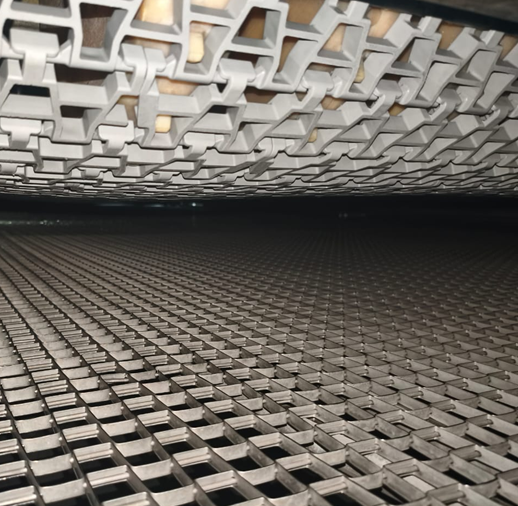
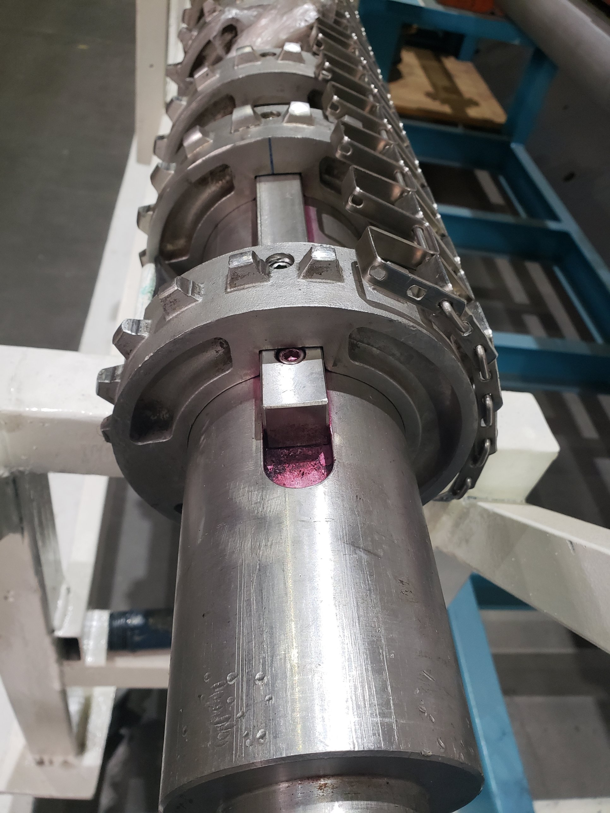
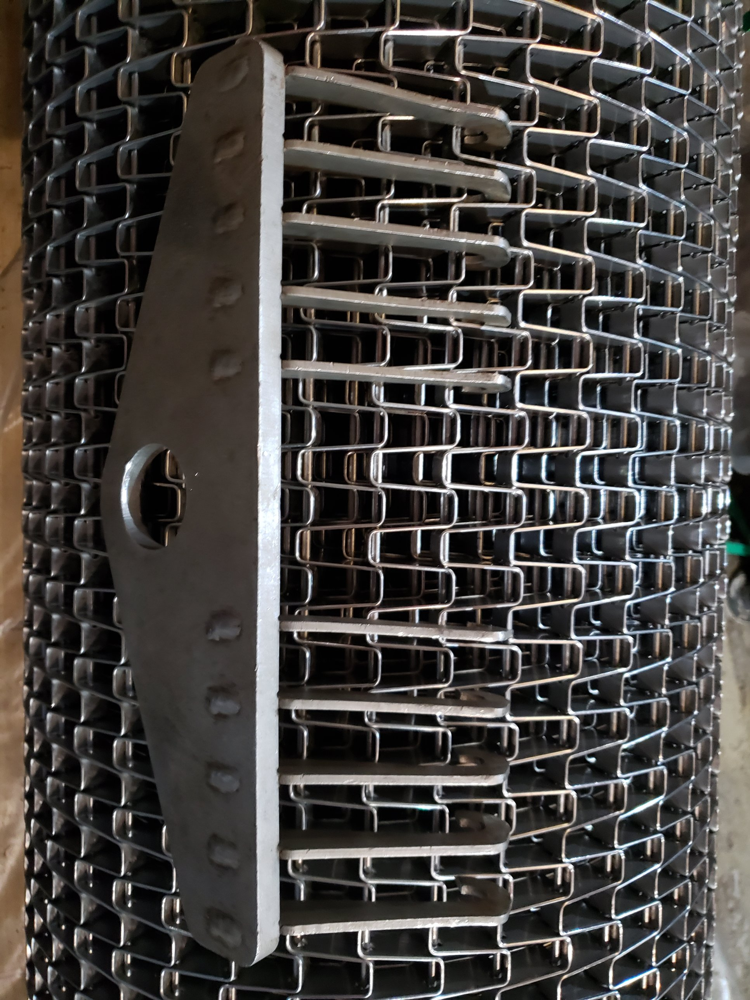

Belts in a Can Washer and Dryer
After forming, cans pass through a multi-stage washer, where they are cleaned and treated with hot chemical sprays, and then through a dryer oven. The cans travel upside down on a wide metal belt, while a second belt above them, the hold-down mat, keeps them in place against the force of the sprays.
These belts work in one of the harshest environments in the plant: acids, alkaline cleaners, high temperatures and continuous operation. Belt material, open area for drainage and airflow, and low friction all matter, but even the best belt will fail early if it is not installed, aligned and tensioned correctly.
Hold-Down Mats
The hold-down mat runs just above the washer belt, supported by hanger brackets and rails. It must keep the cans stable without crushing or marking them. Most hold-down mats are plastic grids with steel rods, which are lighter than metal belts, easier to assemble and gentle on the cans.

Material choice makes a big difference in service life:
Lower cost, but over time they can expand and rub against the structure, become brittle and absorb can lubricant and chemicals.
Higher initial cost, but much better chemical resistance. They do not become brittle or expand, last considerably longer and usually fit the existing sprockets.
BELTPRO evaluates the condition of hold-down mats, brackets and rails and advises when an upgrade will pay for itself.
Aramid (Kevlar) Belts
Aramid belts, commonly known as Kevlar belts, are used in some can dryers and ovens because they are light, flexible and heat resistant. Their weak point is mechanical: they are sensitive to edge damage, rubbing against the structure and uneven tension across the width.
A misaligned shaft or a belt that tracks to one side will fray an aramid belt edge quickly. Correct shaft alignment, even tension and careful tracking at start-up are essential. BELTPRO also helps plants compare aramid belts with metal alternatives when frequent replacements become a cost problem.
Sprocket Positioning
Washer belts are driven by sprockets whose teeth must engage the belt in the correct openings. A sprocket that is off position rides on the wires instead of driving the belt, causing mesh damage, noise, tracking problems and uneven load across the width.

- Drive and driven shafts follow different opening patterns, so the layout must be checked on each shaft.
- Only the center sprockets should be locked to the shaft. The others must be free to move sideways so the mesh can expand with heat and chemicals without being forced.
- All sprockets on a shaft must be the same size and in time with each other, so every tooth pulls evenly.
BELTPRO checks sprocket type, condition and position against the belt specification, and defines the correct layout during installation.
Shaft Alignment
Every shaft in the washer and dryer must be level, parallel to the others and square to the belt centerline. Even a small misalignment makes the belt drift to one side, rub the frame, damage its edges and interfere with the hold-down mat.
BELTPRO checks and corrects shaft alignment with an optical transit (theodolite), giving the plant a reliable reference for the whole line instead of relying on tape measures and visual checks.
Installation and Tensioning
Wide washer belts are installed by pulling the belt ends together for splicing. Pulling from one or two points distorts the mesh and leaves the belt uneven before it ever runs. The correct method uses a pulling bar with hooks that engage many belt loops across the width, so the pulling force is shared evenly.

Higher load on the belt, sprockets and bearings, faster wear and premature belt stretch.
The belt can jump sprocket teeth, surge and lose position, upsetting can handling and transfers.
The correct tension depends on the belt type, width, length and operating temperature. BELTPRO supervises splicing and tensioning and sets the belt to the right running condition at start-up.
How BELTPRO Helps Canning Plants
- Installation supervision for washer belts, hold-down mats and dryer belts.
- Splicing and tensioning procedures, done right the first time.
- Shaft alignment with an optical transit (theodolite).
- Sprocket inspection and correct positioning.
- Troubleshooting of tracking, can handling and premature belt wear.
- Belt life studies and material recommendations.
- Training for maintenance teams and detailed technical reports.
Run Your Canning Line Belts Right
Whether you are installing a new washer belt, upgrading hold-down mats or fighting recurring tracking problems, BELTPRO can help your plant get the most out of its belts. Contact us to plan your next installation or inspection.
This article is intended for general technical guidance and preliminary engineering reference only. Belt selection, installation, tensioning and adjustments must always follow the equipment and belt manufacturers' documentation, the actual operating conditions and the plant's safety procedures.